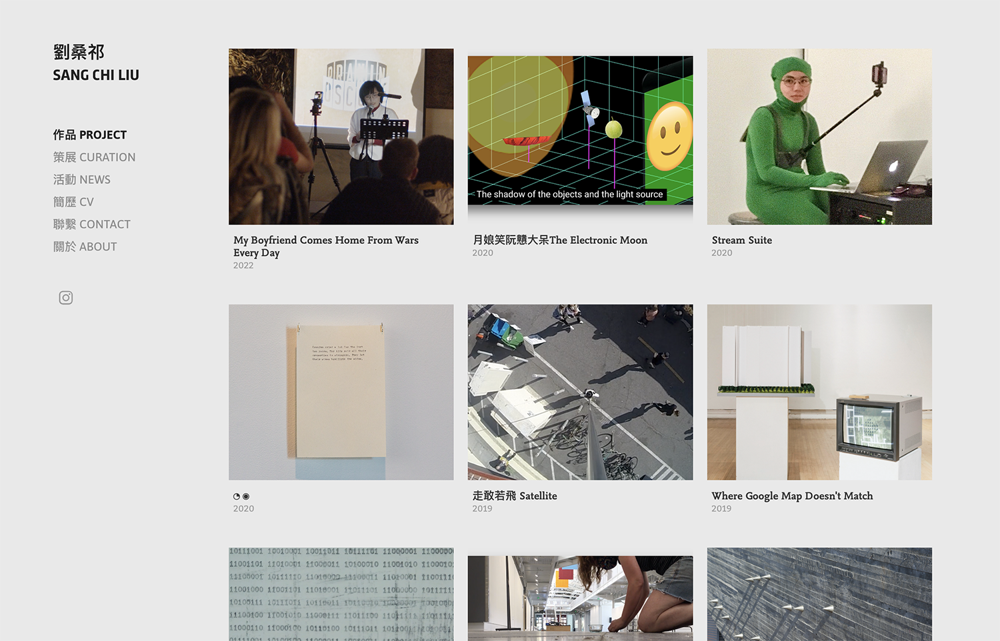

projects
writing
projects 2015 - 2022
about
劉桑祁｜sangchi liu
I am interested in thinking about opening up ways for humans to find ourselves related to machines.

Projects 2015-2022
https://liusangchi.myportfolio.com/
Next up:
3D Modeling and 3D Printing: A Postcolonial Aesthetics Criticism